Spectacular Spider-Man Vol 2 (2003 - 2005)
| Comic Book | Release Date | Cover |
|---|---|---|
| Spectacular Spider-Man Vol 2 #1 The Hunger: Part 1 of 5 |  | |
| Spectacular Spider-Man Vol 2 #2 The Hunger: Part 2 of 5 | 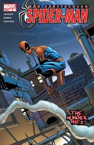 | |
| Spectacular Spider-Man Vol 2 #3 The Hunger: Part 3 of 5 | 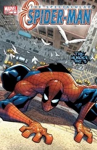 | |
| Spectacular Spider-Man Vol 2 #4 The Hunger: Part 4 of 5 | 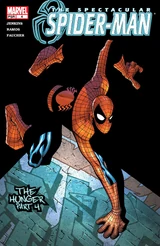 | |
| Spectacular Spider-Man Vol 2 #5 The Hunger: Conclusion | 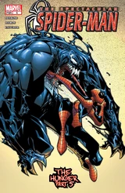 | |
| Spectacular Spider-Man Vol 2 #6 Countdown: Part 1 of 5 | 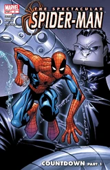 | |
| Spectacular Spider-Man Vol 2 #7 Countdown: Part 2 of 5 | 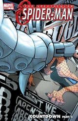 | |
| Spectacular Spider-Man Vol 2 #8 Countdown: Part 3 of 5 | 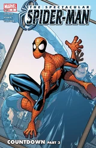 | |
| Spectacular Spider-Man Vol 2 #9 Countdown: Part 4 of 5 | 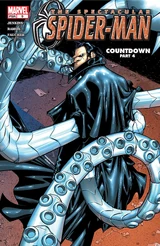 | |
| Spectacular Spider-Man Vol 2 #10 Countdown: Conclusion | 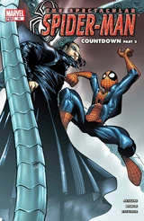 | |
| Spectacular Spider-Man Vol 2 #11 The Lizard's Tale: Part 1 of 3 | 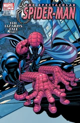 | |
| Spectacular Spider-Man Vol 2 #12 The Lizard's Tale: Part 2 of 3 | 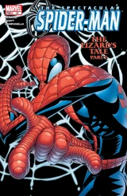 | |
| Spectacular Spider-Man Vol 2 #13 The Lizard's Tale: Conclusion | 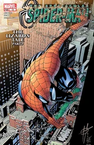 | |
| Spectacular Spider-Man Vol 2 #14 Here there be monsters | 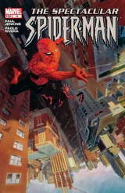 | |
| Spectacular Spider-Man Vol 2 #15 Under My Skin: Part 1 of 2 | 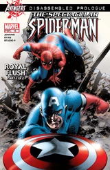 | |
| Spectacular Spider-Man Vol 2 #16 Under My Skin: Conclusion | 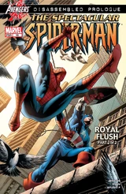 | |
| Spectacular Spider-Man Vol 2 #17 Changes: Part 1 of 4 | 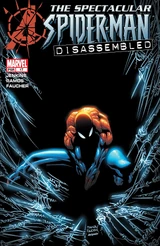 | |
| Spectacular Spider-Man Vol 2 #18 Changes: Part 2 of 4 | 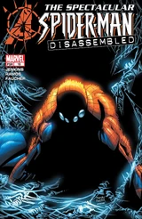 | |
| Spectacular Spider-Man Vol 2 #19 Changes: Part 3 of 4 | 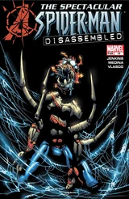 | |
| Spectacular Spider-Man Vol 2 #20 Changes: Conclusion | 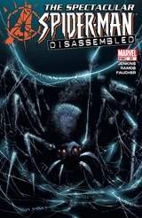 | |
| Spectacular Spider-Man Vol 2 #21 Read 'em an' weep | 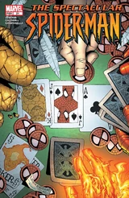 | |
| Spectacular Spider-Man Vol 2 #22 The Infernal Triangle | 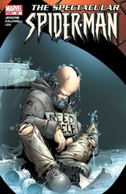 | |
| Spectacular Spider-Man Vol 2 #23 Sins Remembered: Sarah's Story, Part 1 of 4 | 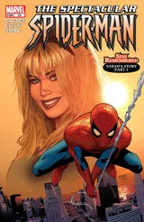 | |
| Spectacular Spider-Man Vol 2 #24 Sins Remembered: Sarah's Story, Part 2 of 4 | 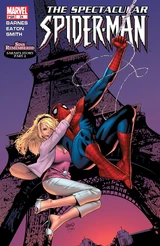 | |
| Spectacular Spider-Man Vol 2 #25 Sins Remembered: Sarah's Story, Part 3 of 4 | ||
| Spectacular Spider-Man Vol 2 #26 Sins Remembered: Sarah's Story, Conclusion | 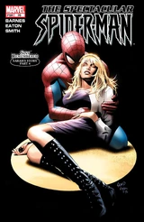 | |
| Spectacular Spider-Man Vol 2 #27 The Final Curtain | 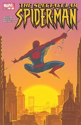 |